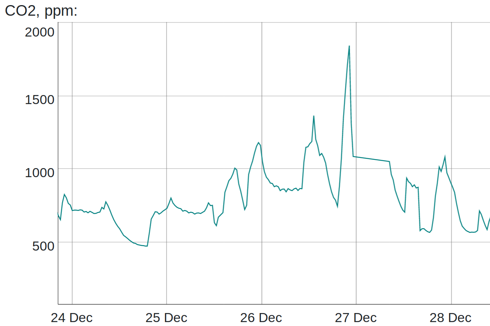

This tutorial explains how to connect Gravity UART MH-Z16 CO2 sensor from DFRobot to Raspberry Pi and get CO2 readings. This is a nice NDIR-sensor with a wide range, up to 50000 ppm.
I have used Raspberry Pi 3 B+ for the tutorial below, but it can be applied for other models as well.
Restore UART0
There are two UARTs on Raspberry Pis: UART0 (PL011) and miniUART. miniUART is not suitable for this sensor. It could be used, but baud rate and communications would not be stable.
UART0 is connected to GPIO 14 and 15. The interface level is 3.3V which corresponds to interface level of MH-Z16 CO2 sensor.
Raspberry Pi uses UART0 for Bluetooth module by default. Adding dtoverlay=pi3-disable-bt to /boot/config.txt disables
the Bluetooth device and restores UART0 to GPIO 14 and 15 (ttyAMA0). Apparently the modem has to be disabled as well:
sudo systemctl disable hciuart.
Note that you might need to update your Raspberry Pi if the kernel does not support device overlay (dtoverlay):
$ sudo apt-get update && sudo apt-get upgrade
If commands above did not bring required firmware, you can get the very latest firmware running sudo rpi-update.
See The Raspberry Pi UARTs for more information.
Testing UART0
After reboot, connect GPIO 14 and 15 pins together.
Install minicom to test serial communications:
sudo apt-get install minicom
Run minicom -D /dev/ttyAMA0 and start typing to verify whether serial communictions work on UART0.
Connecting Gravity UART CO2 sensor
Gravity UART has 4 pins: 5V, GND, TX, RX. Note that interface level of TX/RX is 3.3V, but power is 5V.
Connections:
| Raspberry Pi 3 B+ pin | Gravity UART pin |
|---|---|
| 5V | 5V |
| GND | GND |
| GPIO 14 pin | TX |
| GPIO 15 pin | RX |
Getting CO2 measurements
Communication protocol is described in Datasheet MH-Z16.
I have used python3 script to get CO2 measurements from Gravity UART MH-Z16 sensor.
python-serial is required as a dependency.
#!/usr/bin/python3
import serial
import binascii
import sys
def verify_checksum(bytes):
if len(bytes) != 9:
return False
sum = 0
for i in range(1, 8):
sum += bytes[i]
sum = sum % 256
checksum = 255 - sum + 1
return bytes[8] == checksum
def get_co2(con):
con.write(bytearray(b'\xff\x01\x86\x00\x00\x00\x00\x00\x79'))
rcv = con.read(9)
if not verify_checksum(rcv):
print("Checksum error from received: `{}'".format(binascii.hexlify(rcv)), file=sys.stderr)
return -1
return rcv[2] * 256 + rcv[3]
def calibrate_span(con):
con.write(bytearray(b'\xff\x01\x88\x07\xd0\x00\x00\x00\xa0'))
def calibrate_zero(con):
con.write(bytearray(b'\xff\x01\x87\x00\x00\x00\x00\x00\x78'))
con = serial.Serial("/dev/ttyAMA0", 9600, timeout=5)
co2 = get_co2(con)
con.close()
if co2 < 100 or co2 > 6000:
print("CO2 concentration {} is out of range".format(co2), file=sys.stderr)
exit(1)
print(co2)
You can get very nice historical CO2 measurements inside or outside:
